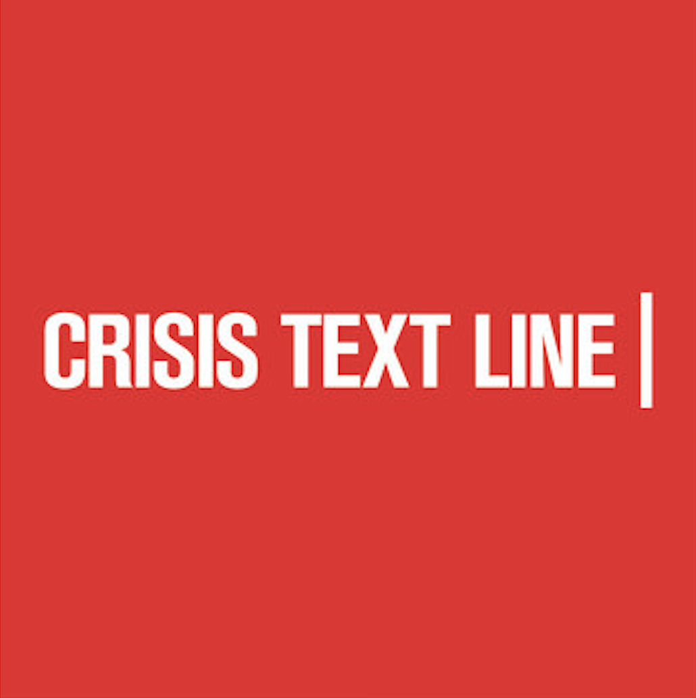

a brief timeline
Microsoft
INCOMING SOFTWARE ENGINEERING INTERN
June 2021 - August 2021

Jane Street
UNBOXED PROGRAM PARTICIPANT
August 2020
As an UNBOXED participant, I implemented a program that trades on a stock exchange while exploring applications of computer science within the firm by learning OCaml and libraries / tools used at Jane Street. The program also connected me with peers and mentors in the field of quantitative trading.
VMware
SOFTWARE DEVELOPMENT INTERN
June 2020 - August 2020

My intern project was to architect and develop a metrics reporting engine to support site reliability by offering key metrics about low level tasks on Ansible. The end goal of this project was to enable the team to better identify vulnerabilities and build resilience in its infrastructure. My final product was a flexible, scalable, API-driven metrics reporting engine using Python, PostgreSQL, and AWS.
VMwellness Web App
VMWARE INTERN HACKATHON
August 2020
During VMware's 48 hour intern hackathon challenge, I collaborated with a team of 5 other interns to build a platform for employees to engage with their wellness throughout the workday, inspired by the unique challenges of working from home. I led the ideation process, from research to wireframing to database design. Then, when it came time to code, we utilized Django Web Framework, Python, HTML / CSS, SQLite3, and GitHub to deliver our final product.
Crisis Text Line
CRISIS COUNSELOR
March 2020 - present

As a Crisis Counselor, I answer texts from people in crisis, bringing them from a hot moment to a cool calm through active listening, collaborative problem solving, and safety planning. To become certified, I underwent 30 hours of training about risk assessment, crisis intervention, and healthy communication techniques.
Wolverine Support Network
DIRECTOR OF OPERATIONS
March 2019 - present

My involvement with Wolverine Support Network has shaped my college experience. Our organization works to destigmatize mental health on campus by offering peer-led support groups, where students can unwind and chat about anything on their mind. I joined a group my freshman year and was inspired to become a group leader the following semester. Now, I currently serve as WSN's Director of Technology & Operations and am able to blend my passions for technology and mental health advocacy. Through this wonderful organization and the positions I have held, I have learned so much about the power of data, empathy, and resilience.
Kappa Theta Pi
Professional Tech Fraternity
DEI COMMITTEE CHAIR
September 2019 - present

Kappa Theta Pi is the nation's premier professional technology fraternity. Joining the brotherhood my sophomore year connected me with ~100 inspiring, talented, and quirky individuals united by our love for technology. Through KTP, I have gained a strong network, joined project teams, developed the fraternity website, and engaged in countless conversations on the topic of tech. I now serve as the chair of our Diversity, Inclusion, and Equity committee, diligently working to ensure inclusion within our fraternity and on the greater Michigan campus.
Michigan Computer Science
CSE DEI STUDENT ACTION COMMITTEE MEMBER
May 2020 - May 2022

I officially declared my major in Computer Science in May 2020 after completing my Data Structures and Algorithms course. Since then, I have been working with the Michigan Computer Science Engineering Department as a member of the Student Diversity, Equity, and Inclusion Committee. This committee is working alongside faculty to develop and implement meaningful solutions to DEI concerns within the department.
University of Michigan
COMPUTER SCIENCE MAJOR, CLASS OF 2022
2018 - 2022

As a senior in high school, it was an easy decision for me to choose to attend one of the best universities in the US - the University of Michigan. At Michigan, I've learned so much and experienced a ton of personal growth beyond the CS curriculum, from my student organizations, interesting classes, and all of the amazing people I've met along the way. Some of my favorite interdisciplinary classes I've taken are Schooling and Multicultural Society, Cognitive Science, and Intro to Women's Studies.
CS Kickstart
PROGRAM PARTICIPANT
August 2018

I walked into this program the week before my freshman year of college without having written a single line of code in my life. Through the program, I was welcomed into a community of intelligent, powerful women pursuing careers in technology. Over the span of five days, I learned the basics of Python, played with an Arduino, visited research labs and startups on campus, and attended several talks by Michigan Computer Science faculty.
Rochester High School
SCHOLAR OF HIGHEST DISTINCTION
2014 - 2018
In high school, I kept myself busy between academics, dance, and volunteering. I was the Varsity Dance Team Captain and French National Honor Society President. I also maintained membership in National Honor Society, National Social Studies Honor Society, English National Honor Society, Model United Nations Club, Captains Club, and the Peer Mentor program, and was an AP Scholar with Distinction and volunteered regularly at the local library.